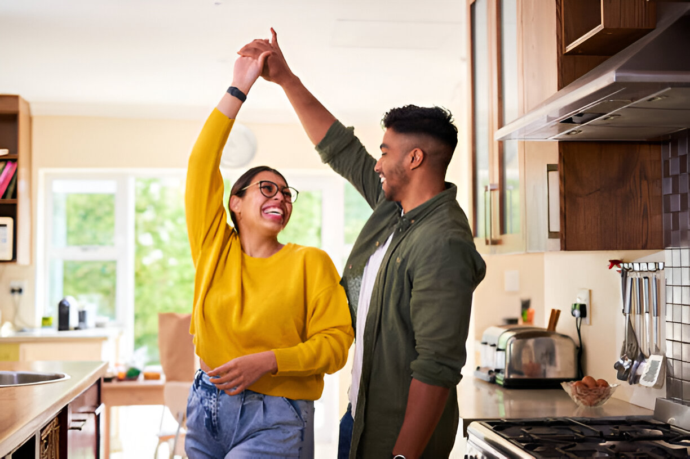
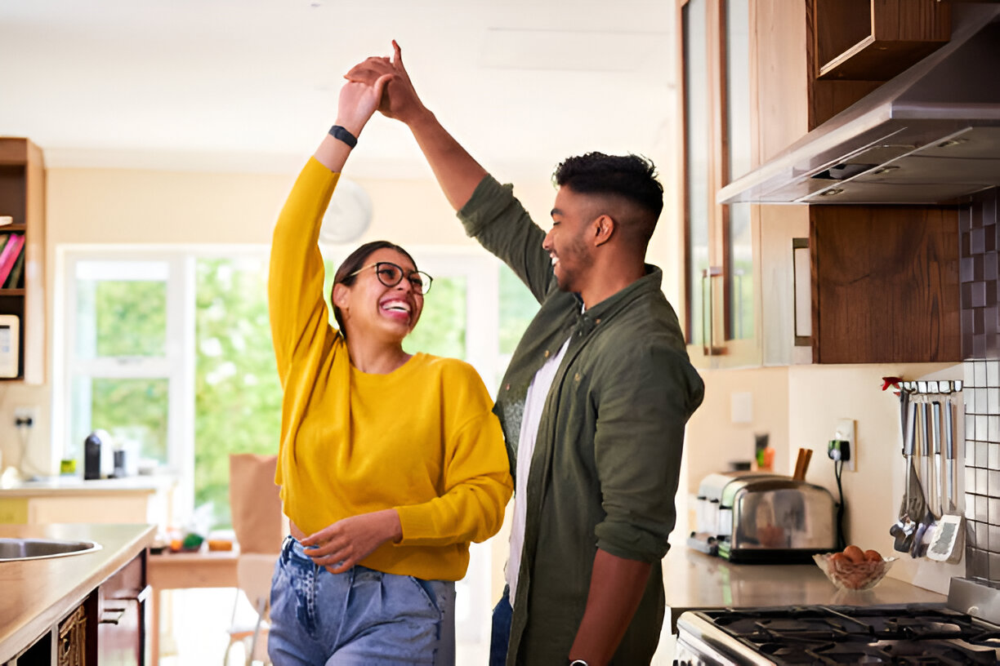

relationship
Solo & Satisfied: Embracing Singlehood While Open to Love
01/08/2024 | By Sam
In a society that often glorifies romantic relationships, embracing singlehood can be a powerful and fulfilling choice. Being single provides an opportunity to focus on self-growth, pursue personal passions, and cultivate a deep sense of satisfaction and contentment. However, being open to love while enjoying the single life is equally important. This guide explores how to embrace singlehood, maintain a positive outlook, and remain open to love and connection.
“To love oneself is the beginning of a lifelong romance.” – Oscar Wilde
The Power of Self-Love
Self-love is the foundation of a fulfilling life, whether single or in a relationship. It involves appreciating your own worth, taking care of your needs, and nurturing a positive self-image. Embracing singlehood allows you to focus on self-love without distractions, creating a solid base for future relationships.
Practicing self-love involves setting healthy boundaries, engaging in activities that bring you joy, and being kind to yourself. It’s about recognizing your strengths and accepting your imperfections. This self-acceptance fosters a sense of inner peace and confidence, making you more resilient and content.
Exploring Personal Passions and Interests
Singlehood provides the freedom to explore your passions and interests without compromise. It’s a time to discover what truly makes you happy and pursue activities that bring fulfillment and joy. Whether it’s traveling, taking up a new hobby, or advancing your career, embracing these pursuits enriches your life.
Engaging in activities that you love not only brings satisfaction but also helps in building a strong sense of self. It’s about investing in your personal growth and creating a life that you enjoy independently. This sense of fulfillment makes you more attractive and confident when you’re open to love.
Building Strong Relationships with Friends and Family
While romantic relationships are significant, the bonds you share with friends and family are equally important. Singlehood offers an opportunity to strengthen these connections and build a supportive network. These relationships provide love, support, and companionship, enriching your life.
Spending quality time with loved ones, engaging in meaningful conversations, and creating shared experiences can deepen these bonds. It’s about valuing and nurturing the relationships that bring joy and support. This strong network provides a sense of belonging and community.
 

Maintaining a Positive Mindset
Embracing singlehood with a positive mindset is crucial. It’s about viewing this phase as an opportunity for growth and self-discovery rather than a period of waiting for a partner. A positive outlook enhances your overall well-being and makes you more open to new experiences and connections.
Practicing gratitude, focusing on the present moment, and celebrating your achievements are ways to maintain positivity. It’s about finding joy in the little things and appreciating the freedom and opportunities that come with being single. This mindset shift transforms singlehood into a rewarding and enriching experience.
Being Open to Love and Connection
While embracing singlehood, it’s important to remain open to love and connection. Being single doesn’t mean closing yourself off to potential relationships. It’s about being open to meeting new people and experiencing love in its various forms while maintaining your sense of self.
Being open to love involves letting go of preconceived notions and being willing to take emotional risks. It’s about approaching potential relationships with curiosity and an open heart. This openness allows you to connect with others meaningfully while preserving your individuality and self-worth.
Finding Balance Between Independence and Connection
Balancing independence and connection is key to enjoying singlehood while being open to love. It’s about maintaining your autonomy and self-sufficiency while building meaningful relationships. This balance ensures that you don’t lose yourself in the pursuit of love.
Embracing independence means enjoying your own company, making decisions that align with your values, and pursuing your goals. At the same time, being open to connection involves building relationships based on mutual respect, support, and shared interests. This balance creates a fulfilling and harmonious life.
Investing in Personal Growth
Singlehood is an ideal time for personal growth and self-improvement. Investing in yourself not only enhances your life but also prepares you for future relationships. It’s about becoming the best version of yourself, which in turn attracts positive and fulfilling connections.
Pursuing education, developing new skills, and focusing on physical and mental well-being are ways to invest in personal growth. This investment enhances your confidence, self-esteem, and overall happiness. It’s about creating a life that you love independently, making you more content and attractive.
Embracing the Journey
Embracing the journey of singlehood with an open heart and mind leads to a fulfilling and enriching life. It’s about appreciating the present moment, valuing your independence, and being open to love and connection. This journey is unique and personal, filled with opportunities for growth, joy, and meaningful relationships.
Conclusion
Embracing singlehood while being open to love involves cultivating self-love, exploring personal passions, and building strong relationships with friends and family. Maintaining a positive mindset, being open to connection, and finding balance between independence and relationships are key aspects of this journey. Investing in personal growth and embracing the journey with an open heart leads to a fulfilling and satisfying life.
In the words of Oscar Wilde, “To love oneself is the beginning of a lifelong romance.” By embracing these principles, you can enjoy the beauty of singlehood while remaining open to love and connection, creating a life that is rich, rewarding, and full of possibilities.